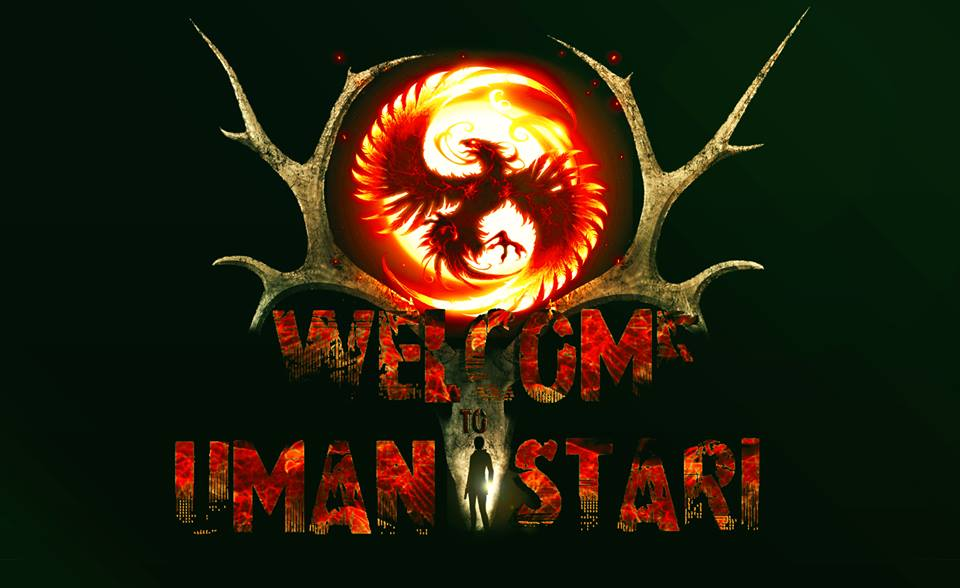
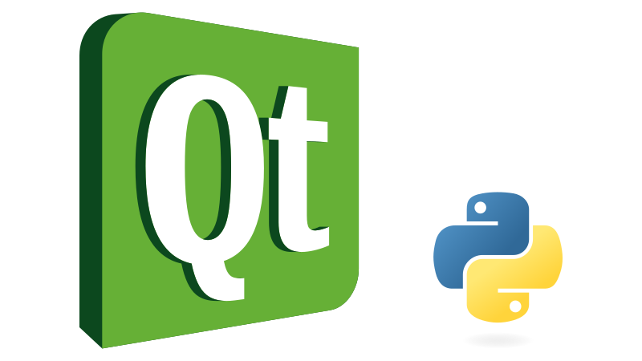
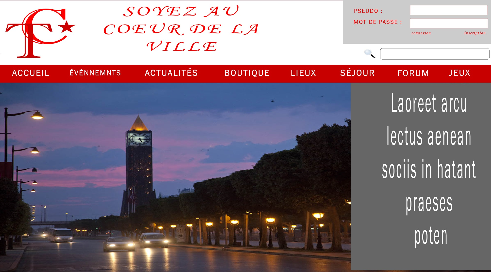
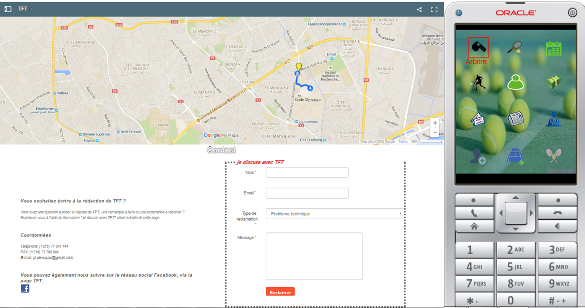
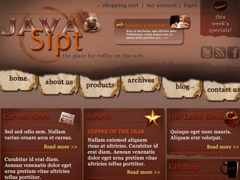

My name is Kais Ben Salem, I'm a backEnd Engenieer specialized in admistration of web applications and CMS. I also work on frontEnd technologies, but my main focus is the administration of the web application. I'm specialized in team management and a little bit of marketing skills. I belive that a good team can achieve anything, and i do my best to lead or be in one .
ESPRIT tunisie
5 Years Course
Calynga Tunisie
Waykos Tunisie
Crisis cell
SQL/NOSQL
Symphony2
Asp.NET
Joomla/Prestashop/Magento
English/French
Management

creating a 2D game with C programming

ERP system

End of Cycle project

Integrated project of development

JEE / .net and angular project
Created by BLACKTIE.CO